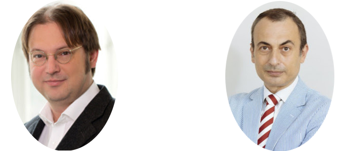

Workshop Satellite of the Conference on Complex Systems 2019. Nanyang Technological University. Singapore. 30 September - 4 October, 2019

The success of statistical mechanics in describing different kind of systems from basic but relevant rules on their microscopic interactions has surpassed the frontier of physics in several attempts to uncover the relevant local rules that can give rise to complex kinds of phenomena in disciplines like biology, sociology, and economy among others.
One of the most interesting manifestations displayed when using that approach is the absence of a characteristics scale during some order-disorder transitions. The study of such as phenomena and some patterns of universality, within the field of Physics, are the subjects of study of the sub-field Critical phenomena. However, the existence of sings of criticality has been also reported in different areas of knowledge. The aim of this satellite workshop is to open cross-field discussions about the broad occurrence of signs of criticality in systems of different nature within the approach of complex systems. The goal of this satellite is to open cross-disciplinary discussions about the concept of criticality. How can we define criticality in different scenarios? And which signs of criticality have been reported in the scientific literature. We are interested in intersecting different definitions about criticality, but also different meanings with the aims of achieving basic agreements about the signs of criticality, generally speaking.
The scope of coverage includes: Any phenomenon presenting signs of criticality, absence of characteristic scale. Theory and/or observation.
14:00-14:30 Stefan Thurner: Criticality in evolution
14:30-15:00 Lock Yue Chew: Multiple phase transitions on social cooperation in coupled social-ecological systems
15:00-15:30 Kiran Sharma: Understanding Criticality in Financial Markets using correlation Patterns
15:30-16:00 Jose Mendes: Structural stability of interaction networks against negative external fields
Break 16:00-16:30
16:30 – 17:00 Guido Caldarelli: Scale-free networks revealed from finite-size scaling
17:00-17:30 Petter Holme: Spin systems on networks revisited
17:30-18:00 Yérali Gandica: Bali ancient rice terraces: A Hamiltonian approach
Stefan Thurner
Guido Caldarelli 